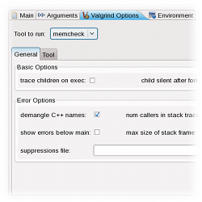
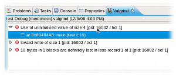
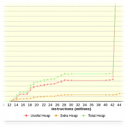
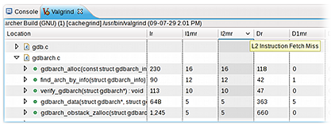

Linux Tools Project - Valgrind Support
Overview
{kind=link}
The Linux Tools Project Valgrind plugin aims to provide simple and effective profiling for the C/C++ Development Tools. There is an abundance of Valgrind functionality to expose in Eclipse. Valgrind itself is very component based and this relates well to Eclipse plugins. The main architectural goal is to have a common Valgrind user interface and underlying launch framework, while the Valgrind tools themselves are contributed via extension points. As with most tools in this project, the aim is to provide not just a user interface for the underlying tool. Instead, this project will attempt to exploit every opportunity to integrate into the Eclipse workbench to provide a unique and formidable user experience.
Extensibility
- Each tool has the ability to contribute its own set of options to the Launch Configuration Dialog via the valgrindTools extension point and providing an implementation of the IValgrindToolPage interface. The controls created inside of the implementing class are nested into a tool specific tab in the Dialog.
- An extender must also implement the IValgrindLaunchDelegate interface. This will control the lifecycle of the contributed tool and will receive control to parse the output of the underlying Valgrind process once the main delegate is finished.
- There is a single Valgrind View, which by itself contains no output. Each tool provides its own appropriate way of displaying its output and, similar to the Launch Configuration Dialog, can embed its contributed controls into the View. This is done via the valgrindToolViews extension point and implementing the IValgrindToolView interface.
Memcheck
Memcheck is a tool that detects memory management problems. It is Valgrind's most popular tool and seemingly the most mature. Memcheck's output is rather straight forward - it is a series of errors along with stack trace information.- The Valgrind View presents this output using a TreeViewer with the errors as top-level elements.
- The stack trace is presented underneath the error and when a frame is double-clicked an editor will open and go to the line in question.
- Markers represent memcheck errors inside the editor and are linked to the Problems View.
- Includes an editor for Valgrind suppressions files featuring syntax highlighting, folding and code completion.
- Video Demo

{kind=link}
Massif
 Massif is a heap profiling tool. It takes several "snapshots" during execution of your program detailing the various heap allocations throughout. It's output for each snapshot primarily consists the time of the snapshot, how many bytes were allocated that can be used, and how much extra was allocated than was asked. The unit of time can be configured to be instructions, milliseconds or bytes. At specified intervals, "detailed" snapshots are produced. These detailed snapshots contain a tree of heap allocations that comprise that snapshot. Unlike Memcheck, Massif does not yet support XML output. Massif's output is complex and as such requires creative ways of displaying it. Valgrind includes the ms_print program that is used to display Massif's output in a visually appealing manner. ms_print was used as a template for how to display this output.{kind=link}
- The default view of the output is with a TableViewer. Snapshots are displayed as tabular data, just as ms_print does.
- For detailed snapshots, an icon indicates the snapshot can be double-clicked and the View will display a TreeViewer of the detailed snapshots' heap allocation trees.
- ms_print also provides a bar chart of bytes allocated throughout execution. In perhaps a more appropriate style, there is an option to display a detailed line chart of this data.
- Video Demo
Cachegrind
Cachegrind performs cache and branching profiling. A Cachegrind profile run measures the number of cache misses and branch mispredictions performed by an application. The results of a Cachegrind profile run are displayed in the Valgrind view. These results show Cachegrind's cache/branch data in different levels of granularity.- Double-clicking on any file, function, or line will open the corresponding source file and place the cursor on the appropriate location (if the source can be resolved).
- Integration with the CDT's parsed code model provides a user interface that resembles what you see in the Outline view.

{kind=link}
Future Plans
- Caching output from recent Valgrind runs for quick restoration
- Integration of the remainder of the Valgrind tool suite
Try it out
Please use our update site as described here.Check out the source code from our Github repository